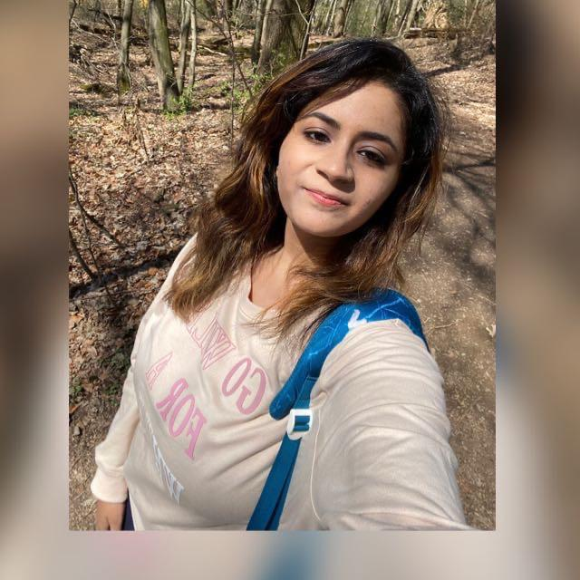

Sejal Deshpande

Summary
A hardworking and dedicated individual with experience and skills in Computer Science (IT).
Education
- Masters in Computer Science Web Engineering - Technical University of Chemnitz (01/2023 - Ongoing)
- Bachelor of Information Technology Engineering - University of Mumbai (06/2018 - 06/2021)
- Diploma in Information Technology - Dr. DY Patil School of Polytechnic (07/2015 - 07/2018)
Work Experience
- Student Research Assistant (IT Support) - Technical University of Chemnitz(Economics Department)
- Responsibilities Handled -
- Providing technical support.
- Maintaining computer systems
- Troubleshooting technical issues.
- Installations on MAC Operating Systems, Windows.
Skills
- IT Skills :
- HTML/CSS
- JavaScript
- Node.js
- Python
- SQL
- Soft Skills :
- Communication skills
- German Fluency
-
English Fluency
- Leadership
- Decision maker
Certifications